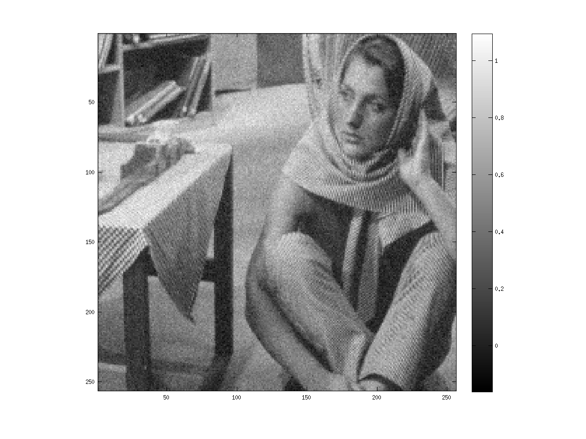
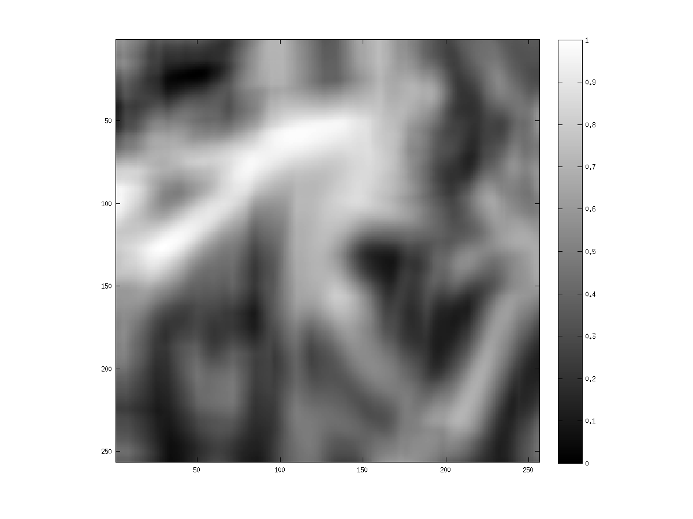
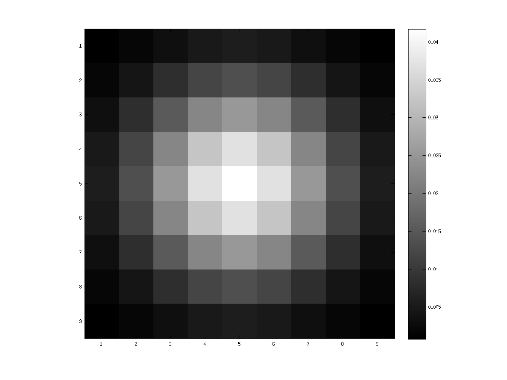

Digital Image Processing - Assignment 2
Team Members
- Mayank Meghwanshi - 110050012
- Vivek Atulkar - 110050039
Edge-preserving Smoothing using Patch-Based Filtering
-
-
Image - barbara.png
sigma : 1, optimal rmsd : 0.1431
Original Image

Corrupted Image

Filtered Version , rmsd = 0.1431 , elapsed time : 168.980877 seconds

Mask used to make patches isotropic
-
Other Filtered Images
0.9 sigma , rmsd = 0.1442 , elapsed time : 169.970087 seconds
1.1 sigma , rmsd = 0.1446 , elapsed time : 167.050844 seconds